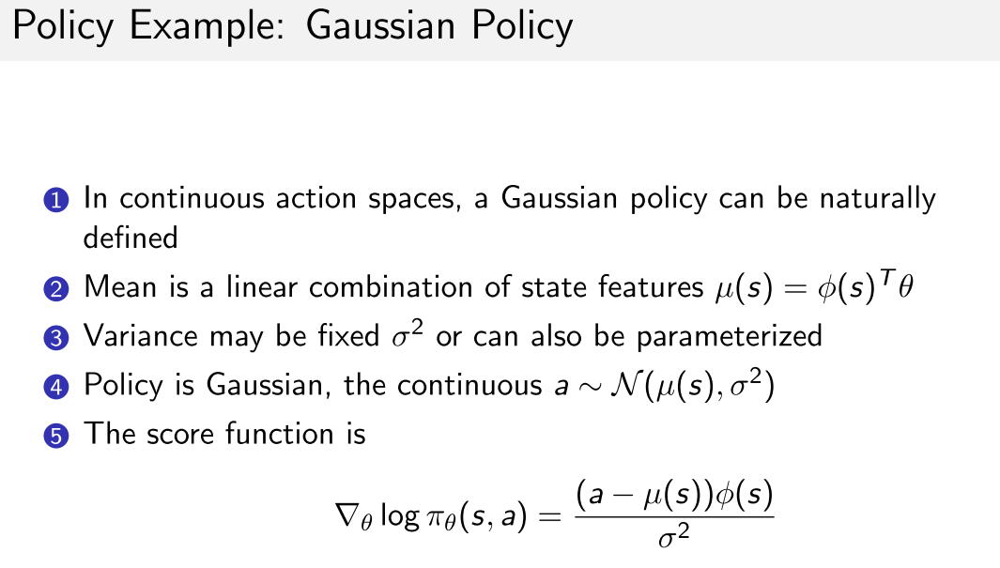
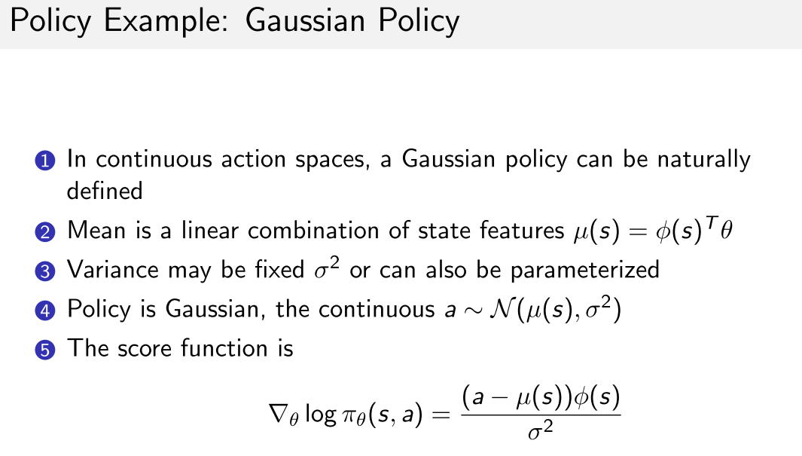
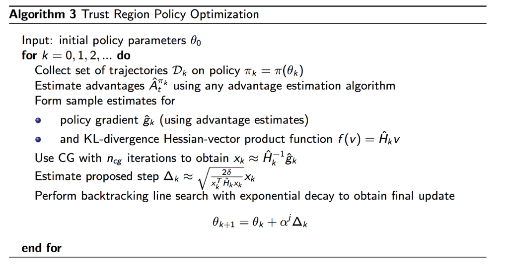

4 周博磊RL-6-策略优化
- 优势:
- 收敛性好, 至少是局部最优;
- 在高维动作空间更高效, PG输出是向量, value-based只是单值;
- 可以学习随机策略, value-based不可以. 比如剪刀石头布游戏, 随机更好.
- 劣势
- 经常收敛到局部最优;
- 评估策略方差比较大.
1. 策略梯度
- 推导
- 对于无法求导的性能函数,可以使用Cross Entropy Method (CEM)或者有限微分(Finite Difference)


score-function, score function指的应该是每个样本会对应一个score, 这个score近似衡量了这个样本对于log likelihood的贡献. 最终的log likellihood就是每个样本的score加起来再加上一个常数. 因此, 当score的方差大的时候, 每个样本就提供了关于loglikelihood更多的信息, 所以用MLE估计参数的时候, 得到的参数估计的方差反而越小.
(1)

策略举例
考虑离散和连续, 使用softmax和高斯, 其导数如下
 

2 策略函数优化

A2C
参考链接
3 PG 改进
PG问题:
- on-policy样本效率低, 用同一policy进行串行地采样和优化, 采样效率低;
- 训练不稳定. 数据相关性大, (策略出错->错的样本->更坏的策略)导致训练崩溃, 无法自动修正偏差.
优化方向:
- 样本效率低: 重要性采样(TRPO)
- 不稳定: 限制策略更新的置信区间. (natural PG, TRPO)
3.1 重要性采样公式
(2)

(3)
3.2 Natural Policy Gradient
纯PG算法再参数空间进行梯度上升, ==这种方法只考虑了更新最快的方向, 没有和策略联系起来, 而且对参数地初始化非常敏感==.
因此, 可以考虑在分布空间(策略输出)上进心梯度上升, 即加入KL散度作为约束项, 控制分布空间的更新速度, 而不管曲率, (因为只关心由参数诱导的分布的, 因此更鲁棒.)
(1)

由此将问题转化为带约束最优化问题

增加置信区间的鲁棒性
(4)
但是比率太大会导致训练不稳定性, 步长太大容易跳过最优解, 所以要限制这个比例的大小, 所以引入一个限制, 用KL散度:
(5)
NPG推导之后的形式:


好处:
- 不用显示设置学习率, 只用设置一个置信区间的大小.
- 参数的剧烈变化不会显著改变策略网络的输出.
伪代码
3.3 TRPO
- NPG+important sampling的改进版.
- 近似计算Fisher Information Matrix (FIM)的方法, 通过解线性方程的方法估计

TRPO伪代码
TRPO 论文证明了, 在迭代的过程中, 每一步都能产生更好的策略, 即通过在每步迭代中最大化, 可以保证真实目标函数不下降:

TRPO算法是MM算法的一个实例,
- 目标函数最小化问题: 此时MM表示Majorize-Minimization, 每次迭代找到原非凸目标函数的一个上界函数, 求上界函数的最小值.
- 目标函数最大化问题: 此时MM表示Minorize-Maximization, 每次迭代找到原非凸目标函数的一个下界函数, 求下界函数的最大值.
- 期望最大化(EM)算法可以被视为MM算法的特殊情况, 在EM算法中通常涉及条件期望, 而在MM算法中, 凸性和不等式是主要焦点.
TRPO的问题
- 为当前策略求计算量大, 二阶优化
- 逼近H需要large batch of rollouts
- 共轭梯度(CG)算法实现复杂
3.4 ACKTR
- 思想来源:
- SGD是一阶优化方法, 优化效率低
- Natural Gradient Descend可以通过二阶优化加速收敛, 但是需要有H矩阵求逆过程
- 通过Kronecker-factored Approximate Curvature (K-FAC)加速H矩阵求逆运算.

3.5 PPO
spinningup PPO
4. 值函数主线
- Q-learning
- DDPG
- TD3
- SAC
4.1 DDPG

对初始化很敏感
4.2 TD3
只能用于连续动作空间.
主要解决Q值过估计的问题.
Clipped Double-Q Learning.
- double Q function
- 每个Q函数都有一个target net, 用估值小的target输出计算TD Target.
Target Policy Smoothing.往target action中加入噪声并clip,
- 加入噪声
- clip起到正则化作用, 避免策略出现尖峰.
“Delayed” Policy Updates. TD3策略网络的更新比Q网络更新慢. paper建议每两次Q更新一次policy.
4.3 SAC
基础版本只能用于连续动作空间, 但是可以改进成离散动作空间.
使用off-policy优化随机策略, 通过加入熵正则化项, 把随机策略优化和DDPG方法结合.
- Entropy-regularized RL:策略优化目标为最大化预期回报和熵(策略的随机性)之间的权衡
熵正则化项本质为了保证探索性

- 与TD3一样, 也使用了double Q函数, 计算目标时也是用较小的target Q;

- 策略优化: 使用Reparameterization trick. 可以把关于动作的期望写成关于噪声的期望.
- 因为动作分布取决于策略参数, 会造成样本和参数的相关性.
- 使用Reparameterization之后, 动作分布就与策略参数去相关了
- Reparameterization技术介绍
- 假设要求如下期望: , x采样值严重依赖于参数的分布
- 可以通过引入一个与独立的噪声变量重写采样函数;
- 将x重参数化为的函数, 的随机性被代替, 则